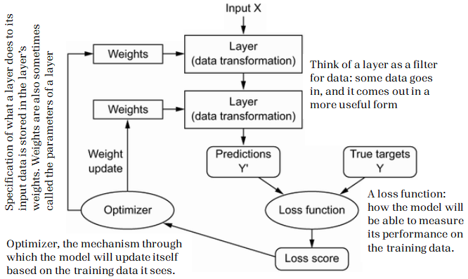

Hint for AI/ML/Deep learning
What is Machine Learning: definitions will be updated soon
AI allows machines to develop capabilities that are equal to or surpass human intelligence (e.g., intelligent robots). Another relevant factor is machine learning (ML) as a subcategory of AI. It is, for instance, used to build systems that learn from data sets rather than from programmed instructions, thus leading to a learning process based on artificial multi-layer neural networks or deep learning. Future wireless network that comes with an AI-native air interface, making radios capable of learning from the environment and from each other based on trained neural networks. Neural networks are a subcategory of machine learning and relevant in wireless communication. The following neural networks will be considered on this page:
In addition to AI/ML books or lecture notes (plenty FREE docs can be found online) you might have, Scikit-learn, Pytorch, TensorFlow, and Keras are good tools across the machine learning and data science industry.
Dataset used for AI/ML/Deep learning or training
|  |
|---|
Challenges of Machines Learning in Wireless Communications: